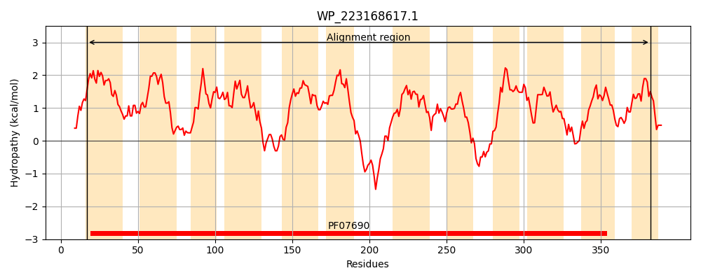
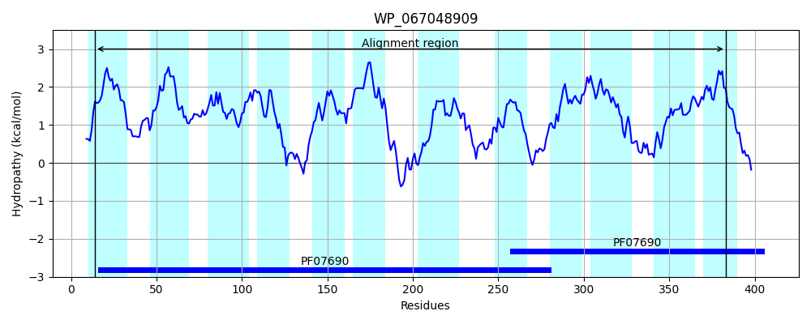
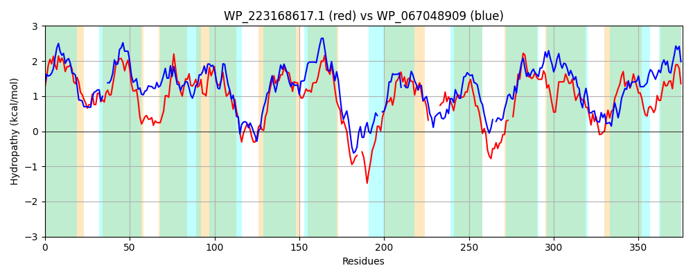

Hit Accession: WP_067048909
Hit TCID: 2.A.1.68.2
Hit Description: gnl|BL_ORD_ID|21323 gnl|TC-DB|WP_067048909.1|2.A.1.68.2 MFS transporter [Methanofollis ethanolicus]
Mach Len: 376
e:0.000000
Query TMS Count : 12
Hit TMS Count: 12
TMS-Overlap Score: 10.900000
Predicted Substrates:None
BLAST Alignment:
Score: 331 , Bit scores: 132 bits, E-value: 1.2e-34, Alignment length: 376, Percentage identity: 26
Query: 17 MLLMLAALLPIMGTLTMLPVMPILFGHFAAQPHAQLLVPMIITLPAVSMALLAPLAGMVGDRLSRRRLLIAATGVYAVFGLLPVMLDDLHTILLARLVMGIADAFILTTANALIGDYFAGEARSKWLAVQSGMGSVLSTLIVLGAGLLGTLGWYGPIYLYALAIPVFIGLCLFTAEPALRHRADN--IADEKGVAFPRRKMAAIGLITLGSAILYFLEPLQISLVFS------QLGLTSSSQIGIATAMAGVGVPLGAWLYGRSAKQRIDRQFL--LFYAIFGFGLLFIAVARNPLAGVAAGFVAQIGNGMLIPLMLAWMMKTLPAPHRATGIGIWHTFFFLGMFISPVLMNMLNGVTGSLQHSLLWFALLTLAIA 382
+ LMLAA+L +MG + P +P++ F A V +I+TLPA+++AL G + DR+ + +L+A+ ++ + G L L+ IL+ R ++GI A I T ++LI Y+ G R++ L Q+ + ++ + GLL + W +Y + + + G+ L EP L N +DEK P +A + LGS +L+FL P++ + LG ++ G+ + G YGR A R R + L + +FG G + +A + A A GNG+L+P +L W+ P G + +G F S + + + + + + L F + +A
Sbjct: 14 LFLMLAAMLILMGGAAIAPALPLISEAFPDASDAA--VALIVTLPALAIALTGVFIGALSDRIGKIPVLVASVAIFTIAGSSGFYLTSLYAILVGRFILGIGIAGITCTTSSLIVCYYEGATRTRVLGYQAAAMGIGVLILEVSGGLLAGISWRAAFLIYLVGVVILAGVLLTMKEPVLPSIGRNTVASDEKFPVAP--LLAGYSTLFLGS-MLFFLMPIKFPYFIAGMDAARVLGENTALTSGVFLGIMGCAASFMGLFYGRLA-WRFHRYTILALTFLLFGIGYCSLGLATSLAAVAFAVICIGFGNGILMPTILTWIAAVTPRQFLGRASGGFSVALNIGQFASTLAIASVTAIAVTYGNLFLMFGCVAFVLA 383 | Protein Hydropathy Plots: |
|---|
|  |  |
Pairwise Alignment-Hydropathy Plot:
|
|---|
|  |